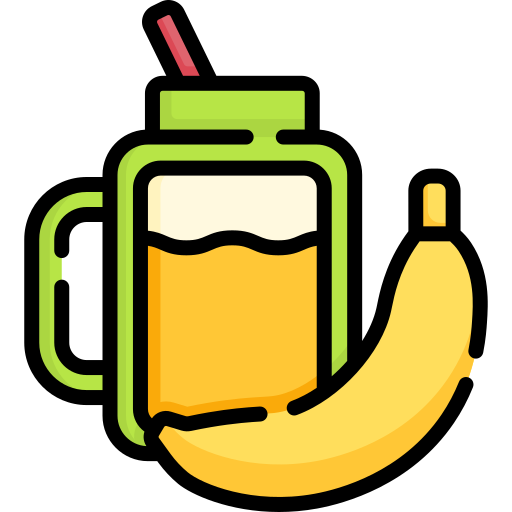
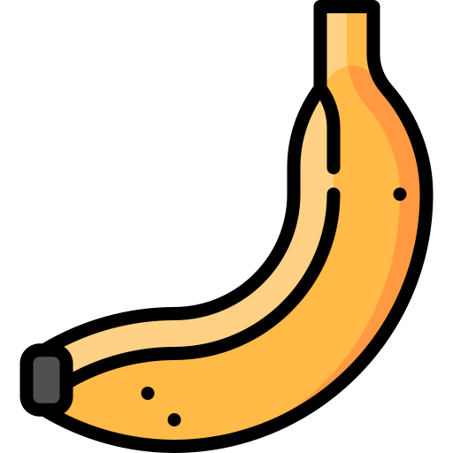
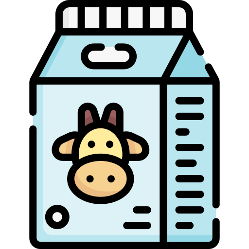

Banana and Peanut Butter Smoothie
- Ingredients:

- 1 'Nana
- 2 Tablespoons o' Smooth Peanut Butter
- 2 Tablespoons o' Vanilla yogurt 
- 1/2 A Glass o' Cow Juice (Or substitute o' choice!)

A fruit from above, a 'gume from the earth.
They make a fine drink when they're mixed-up with mirth.
If you take your first sip in the morning light,
You'll remember the taste when your dreams take flight.

- To Make This Delicious Beverage, You'll Need To:
- Spoon up your peanut butter and your vanilla yogurt and jettison them into your blender.
- Break up your 'nana into chunks.
- Slam dunk your chunked up 'nana pieces into the aforementioned blender.
- Pour your cow juice (or substitute o' choice) into...guess where!
- Finally, unless you want to spend the next eternity cleaning your kitchen, put your lid on the blender before you smash (gently) that blend button.